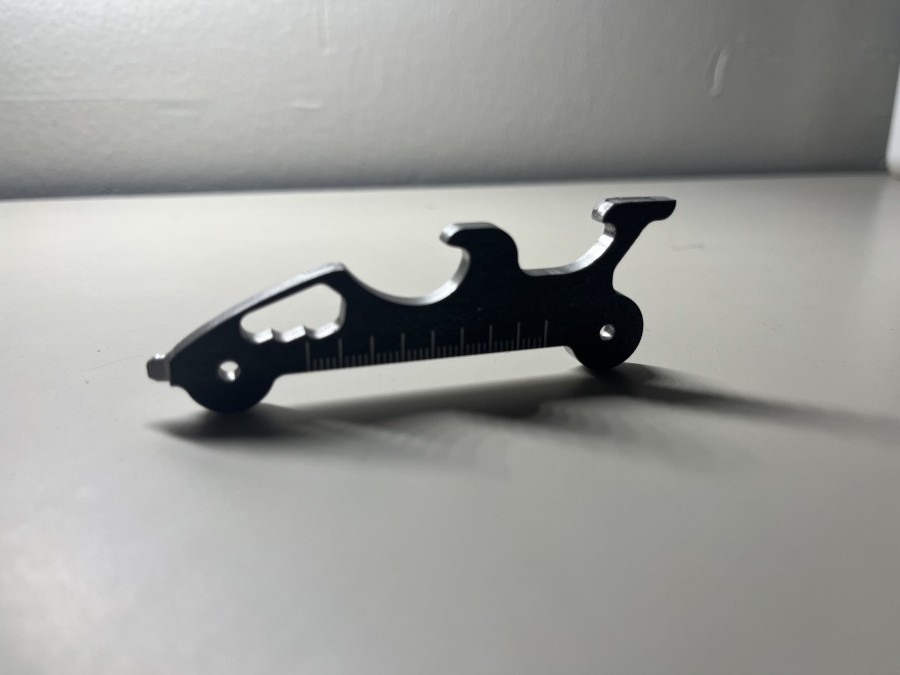
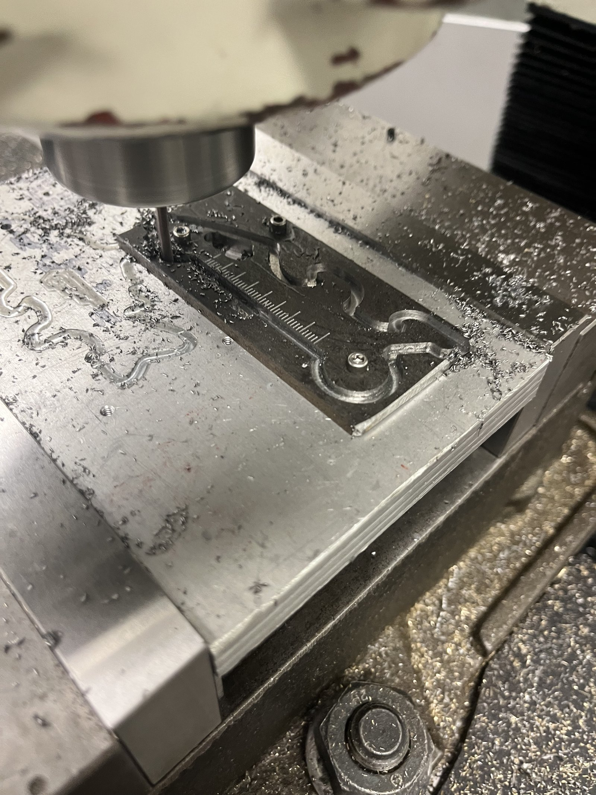
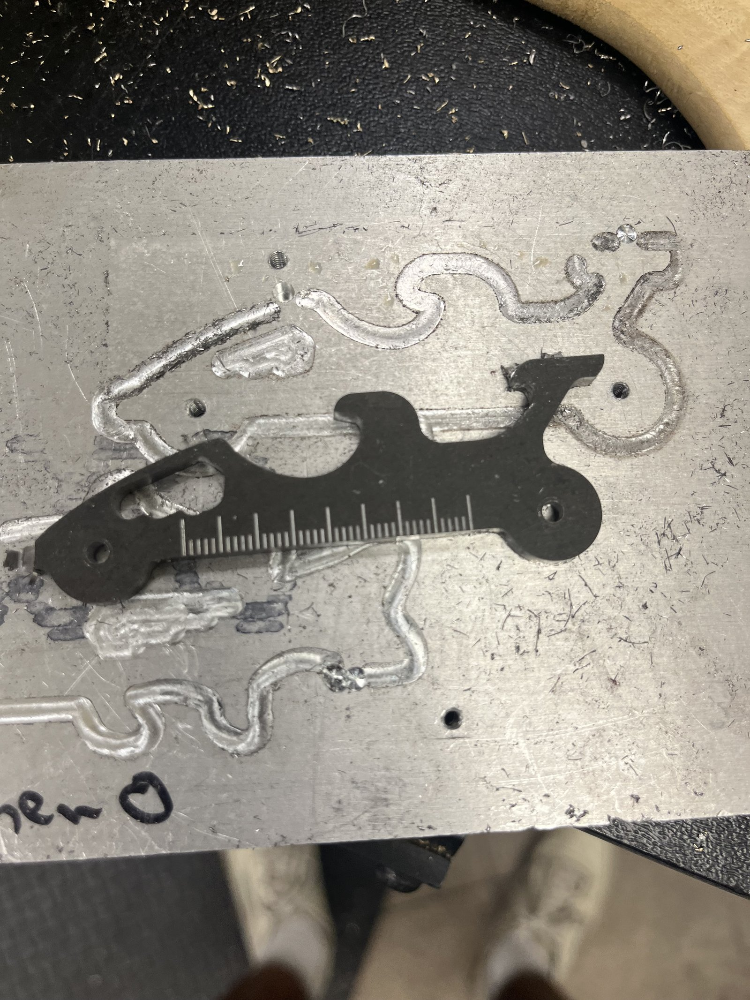
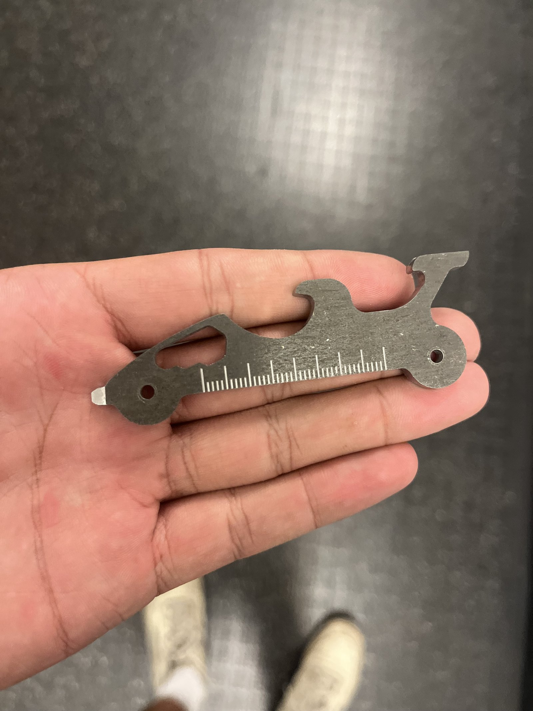
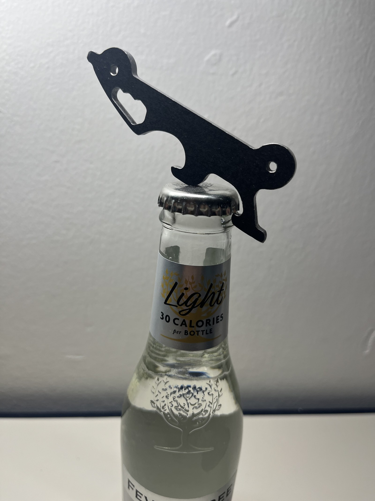

Precision Manufacturing, 2024
Racecar Multitool
A compact racecar multitool designed and machined from scratch. The brief required three core functions; this one has four: ruler, screwdriver, wrench, and bottle opener, fully toleranced to ASME GD&T.

Overview
The brief called for a trackside multitool with at least three main functions. I designed the entire tool myself and fit in four: ruler, screwdriver, wrench, and bottle opener. I then produced the complete engineering drawing to ASME Y14.5: datum structure, true-position callouts, and surface-finish requirements, all of which had to survive contact with real fixturing and real cutting tools.


Execution
I planned the operation sequence around datum accessibility, deciding which features had to be cut in the same setup to hold their positional tolerances, and machined the tool on a manual mill and lathe, verifying critical features against my drawing throughout.
The outline was profiled on the mill with the part held on a fixture plate, then released from the plate, deburred, and finished.


